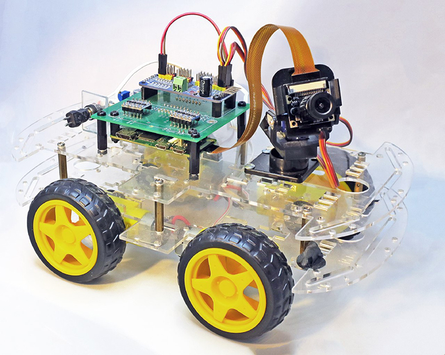

RaspberryPI FPV car
We will build 4wd car – the steering will be similar like in a tank – to turn one side of wheels will rotate with different speed than other. At the car will be placed camera on special holder where we can change camera position. The robot will be controlled by web browser (chrome or firefox at desktop, or firefox at mobile phone), at the browser, We will get camera video ( with only 200ms latency), and from the browser, we can control the car movements and camera position.
